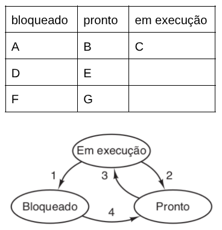
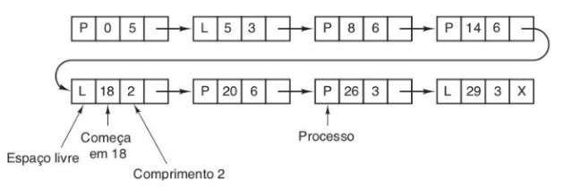
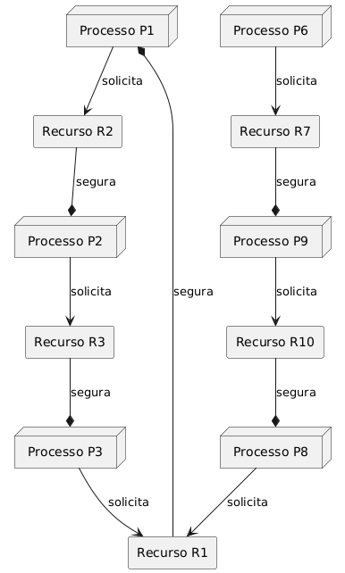

O
nome do primeiro clone do UNIX criado para fins educacionais PAGA do
linux é ___, enquanto uma versão gratuita desse sistema foi criada sob o
nome ___.
ID: 225Tipo: multiplaescolha
O que significa executar um processo em segundo plano?
Alternativas:
Executar um processo que não precisa ter interação com o usuário
Executar um processo seguido de outro processo (o segundo)
Executar um processo via terminal
Executar um processo de forma interativa
Executar um processo depois do primeiro plano
ID: 226Tipo: aberta
Como se faz para visualizar arquivos ocultos no windows e no linux?
ID: 227Tipo: completar
A
diferença entre programa e processo é que ___ consiste no código que
está armazenado em uma mídia, enquanto ___ é o código que está sendo
executado em memória, podendo ainda ser executado em segundo plano.
ID: 228Tipo: multiplaescolha
Considere
um programa em python que acessa um arquivo texto do computador,
fazendo leitura de informações. Em que modo esse programa está rodando?
Alternativas:
Modo usuário
Modo núcleo (ou kernel)
Modo interativo
Modo batch (lote)
Modo binário
ID: 229Tipo: multiplaescolha
Existem
diversas distribuições linux que são baseadas em outras distribuições,
por personalizações visuais e internas. Considere as seguintes
distribuições linux:
a) Ubuntu
b) Mint
c) Manjaro
d) EndeavourOS
Em que distribuições, respectivamente, são baseados esses sistemas
operacionais listados?
Alternativas:
Debian, Ubuntu ou Debian, Arch e Arch
Debian, Arch, Arch, Debian ou Ubuntu
Debian, Arch, Ubuntu, Arch
Debian ou Ubuntu, Arch ou Debian, Ubuntu, Arch
Arch, Arch, Debian e Ubuntu
Arch, Debian, Debian, Debian
Ubuntu, Debian, Arch, Ubuntu
Ubuntu, Arch, Debian, Debian
ID: 230Tipo: aberta
Considere
um computador moderno que possui os sistemas Windows e Linux
instalados, ambos funcionando em modo dual bool. Quantas e quais
partições deverão existir no disco, no mínimo? Informe um sistema de
arquivo sugerido para cada partição.
ID: 231Tipo: aberta
A
grande maioria dos sistemas operacionais conhecidos utiliza uma
organização para acesso a arquivos de maneira hierárquica,
especificamente em forma de árvore. Existem outras formas de organizar o
acesso a arquivos? Se sim, exemplifique e justifique em que cenário
esse tipo de organização de aplica.
ID: 232Tipo: completar
Considere
3 processos A, B e C que estão sendo executados. Os 3 processos desejam
acessar a impressora e a rede sem fio. No contexto de preempção (ou
seja, o recurso ser preemptível ou não), a impressora é um recurso ___,
de maneira que deve ser usado de maneira exclusiva pelo processo desde o
início até o fim, sem intercalar esse uso. De outra forma, a rede é um
recurso ___, permitindo que os processos sejam interrompidos para que
outros sejam executados enquanto os pacotes de rede não chegam.
ID: 233Tipo: aberta
Considere
um cenário A no qual cinco processos devem executar em uma CPU que
possui 4 processadores. Em outro cenário B, cinco processos deverão
executar em um computador que possui 6 processadores. Se considerarmos
que o sistema em questão NÃO vai executar escalonamento, informe se em
cada cenário vai ser possível realizar o multiprocessamento de todos os
processos, e justifique a sua resposta.
ID: 234Tipo: multiplaescolha
Processos
que estão sendo executados em segundo plano, especialmente aqueles que
são acionados na inicialização do sistema operacional, recebem um nome
especial:
Alternativas:
daemon
startup
background
foreground
zumbi process
dead process
sleeping process
ID: 235Tipo: aberta
Considere os processos mostrados na figura abaixo:
(QUESTÃO ANTIGA)

Pergunta-se: após a término do processo que está em execução, quais são
os processos que podem ser executados a seguir? Informe as letras
separadas por vírgula, sem espaços.
ID: 236Tipo: aberta
Considere os processos mostrados na figura abaixo:
(QUESTÃO ANTIGA)
Considere que ocorra uma preempção e que o processo E inicie assuma o
uso do processador, iniciando sua execução. Suponha também que o
processo D foi acordado, saindo do estado de bloqueio no qual se
encontrava. Apresente o novo estado da tabela, listando os processos que
estão bloqueados, prontos e em execução. Informe as letras separadas
por vírgula, sem espaços.
ID: 237Tipo: multiplaescolha
No
que consiste a técnica copy-on-write? Essa técnica é utilizada, dentre
outras aplicações, no gerenciamento de memória compartilhada de
processos pai com processos filhos.
Alternativas:
Quando
um dos processos quiser escrever, o pedaço de memória é copiado
primeiro e depois a modificação é realizada no novo espaço
É feita uma cópia dos dados compartilhados no momento da criação do processo filho
É feita uma cópia dos dados compartilhados antes da criação do processo filho
Quando
um dos processos quiser ler os dados, o pedaço de memória é copiado
primeiro e depois a leitura e quaisquer modificações podem ser
realizados no novo espaço
Os dados modificados são copiados para um novo espaço de memória logo após a escrita ser realizada
ID: 238Tipo: multiplaescolha
Sobre o uso de threads, qual das afirmações abaixo é FALSA?
Alternativas:
Cada thread possui seu próprio espaço de endereçamento mas compartilham uma única pilha (stack)
Executar 10 threads em um programa apresenta maior desempenho do que abrir para execução 10 vezes o mesmo programa
O uso de threads é apropriado quando as threads compartilham informações
O uso de threads é apropriado quando as threads atuam cooperativamente
Threads associadas ao mesmo processo podem alterar dados de outra thread no grupo
Threads associadas ao mesmo processo podem alterar a pilha de outras threads no grupo
Cada thread possui a sua própria pilha
ID: 239Tipo: multiplaescolha
O
código em python a seguir gera um problema de consumo excessivo de CPU
de maneira desnecessária. Qual é o nome desse problema, ou efeito, que
ocorre?
while True:
if can_enter_critical_region():
enter_critical_region()
break
execute_non_critical_region()
Alternativas:
Espera ocupada
Exclusão mútua
Escalonamento
Região crítica
Bloqueio
Mutex
Semáforo
ID: 240Tipo: multiplaescolha
Sobre o escalonamento de processos, qual é a alternativa FALSA?
Alternativas:
Processos que vão utilizar a impressora podem ser escalonados, sem uso de um daemon
Em
um computador pessoal, os processos competem pela CPU; uma forma de
resolver qual será executado é escaloná-los, de forma que cada um
execute por uma parte de tempo
Em
um computador servidor em rede, os processos competem pela CPU; uma
forma de resolver qual será executado é escaloná-los, de forma que cada
um execute por uma parte de tempo
Processos que vão utilizar a rede podem ser escalonados
Processos que vão utilizar a impressora podem ser escalonados, com uso de um daemon
ID: 241Tipo: aberta
Explique por que é utilizada preempção no escalonamento de processos que desejam utilizar recursos.
ID: 242Tipo: aberta
Forneça o nome de um algoritmo (estratégia) de escalonamento e explique brevemente como ele funciona.
ID: 243Tipo: multiplaescolha
Qual é a principal função da pilha (stack) que é utilizada por um processo?
Alternativas:
Armazenar informações de contexto quando ocorrem chamadas de função
Armazenar ponteiros de arquivos
Armazenar informações sobre o hardware do SO
Permitir a troca de contexto durante o escalonamento de processos
Permitir a troca de contexto durante o swap de processos
ID: 244Tipo: aberta
Utilizando
a letra P para memória principal, C para memória cache e N memória
não-volátil, informe essas letras em sequência, separando por vírgulas,
de maneira que a velocidade das memórias esteja em ordem crescente.
ID: 245Tipo: multiplaescolha
A
lista encadeada abaixo que controla os espaços livres de memória.
Existe, porém, um erro na lista. Qual das opções abaixo aponta esse
erro?
(QUESTÃO ANTIGA)

Alternativas:
O valor de comprimeiro do quarto nó da lista
O valor de comprimeiro do segundo nó da lista
O valor de comprimeiro do penúltimo nó da lista
O valor de início de memória do terceiro nó da lista
O valor de início de memória do primeiro nó da lista
O valor de início de memória do último nó da lista
ID: 246Tipo: multiplaescolha
Sobre extensões de arquivos, qual é a opção FALSA?
Alternativas:
É possível compilar um programa C que possui nome de arquivo com extensão .prog
É possível abrir um arquivo texto que possui extensão .info
É possível abrir um código fonte de programa Java que possui extensão .prog
É possível compilar um código fonte de programa Java que possui extensão .java
É possível abrir uma imagem que possui extensão .gif
ID: 247Tipo: multiplaescolha
Considere
um arquivo teste.txt que foi criado na pasta /home/amigo. Na pasta /usr
foi criado um link soft para o arquivo teste.txt e na pasta /bin foi
criado um link hard para o arquivo teste.txt. Qual das opções abaixo é
VERDADEIRA?
Alternativas:
Se o link da pastas /bin e o arquivo da pasta /home/amigo forem apagados, o conteúdo do arquivo se torna inacessível
Se o link da pasta /usr for apagado, o conteúdo do arquivo se torna inacessível
Se o link da pasta /bin for apagado, o conteúdo do arquivo se torna inacessível
Se o arquivo da pasta /home/amigo for apagado, o conteúdo do arquivo se torna inacessível
Se os links das pastas /usr e /bin forem apagados, o conteúdo do arquivo se torna inacessível
Se o link da pastas /usr e o arquivo da pasta /home/amigo forem apagados, o conteúdo do arquivo se torna inacessível
ID: 248Tipo: aberta
Informe um comando de terminal para criar um arquivo com conteúdo vazio no windows ou no linux.
ID: 249Tipo: multiplaescolha
Analise a seguinte definição: Código
******* é um código que pode ser interrompido a qualquer momento
durante sua execução e, em seguida, ser re-executado ou ter uma nova
execução iniciada (seja pela mesma thread ou por outra), sem que isso
cause problemas ou resultados incorretos.
A definição acima faz referência a que tipo de código?
Alternativas:
Reentrante
Recursivo
Região crítica
Exclusão mútua
Equilibrado
Alternativo
Otimizado
ID: 250Tipo: completar
No
contexto de sistemas operacionais, recursos preemptíveis são recursos
que podem ser removidos (ou tomados) de um processo ou thread que os
está utilizando, sem causar problemas na execução desse processo ou
thread, e sem comprometer a integridade dos dados ou do sistema. Como
exemplos de recursos preemptíveis temos ___ e ___, enquanto como
exemplos de recursos não preemptíveis temos ___ e ___.
ID: 251Tipo: aberta
Considere o grafo abaixo. Verifique se existe algum impasse; caso exista, proponha uma solução para resolvê-lo.
(QUESTÃO ANTIGA)

ID: 252Tipo: completar
No contexto de concessão de recursos a processos, a regra se conceder uma solicitação de recurso leva a um estado inseguro, a solicitação é negada ou adiada
pertence ao algoritmos do banqueiro, utilizado para evitar impasses. Na
caso, um estado inseguro é uma situação em que o sistema operacional
não pode garantir que todos os processos ativos conseguirão ___ sua
execução, mesmo que todos os processos restantes solicitem seus recursos
___.
ID: 253Tipo: multiplaescolha
No
contexto de escalonamento de processos, qual é a anomalia que está
sendo descrita abaixo?
Um ************* é um cenário no qual nenhum processo faz progresso, mas
os processos envolvidos não estão bloqueados. Em vez disso, eles estão
continuamente mudando de estado em resposta um ao outro, mas de forma
improdutiva, sem nunca alcançar seus objetivos. Eles estão "ocupados"
fazendo nada útil.
Alternativas:
Livelock
Deadlock (impasse)
Starvation (inanição)
Spooling
Espera ocupada
ID: 254Tipo: multiplaescolha
No
contexto de escalonamento de processos, qual é a anomalia que está
sendo descrita abaixo?
Um ************* ocorre quando dois ou mais processos estão bloqueados
indefinidamente, esperando por recursos que estão sendo mantidos por
outros processos no mesmo conjunto em espera. Cada processo no grupo
está esperando por um evento que só pode ser causado por outro processo
no mesmo grupo, criando uma situação de espera circular.
Alternativas:
Deadlock (impasse)
Livelock
Starvation (inanição)
Spooling
Espera ocupada
ID: 255Tipo: multiplaescolha
No
contexto de escalonamento de processos, qual é a anomalia que está
sendo descrita abaixo?
*************** ocorre quando um processo é continuamente negado de ter
acesso a um recurso ou à CPU, mesmo que o recurso se torne disponível em
algum momento. Isso geralmente acontece porque outros processos (muitas
vezes de maior prioridade) sempre conseguem o recurso primeiro, ou
devido a um algoritmo de escalonamento injusto. O processo nunca
consegue prosseguir.
Alternativas:
Starvation (inanição)
Livelock
Deadlock (impasse)
Spooling
Espera ocupada
ID: 256Tipo: aberta
No contexto de um sistema operacional, explique porque um driver de vídeo necessita ser executado em modo núcleo.